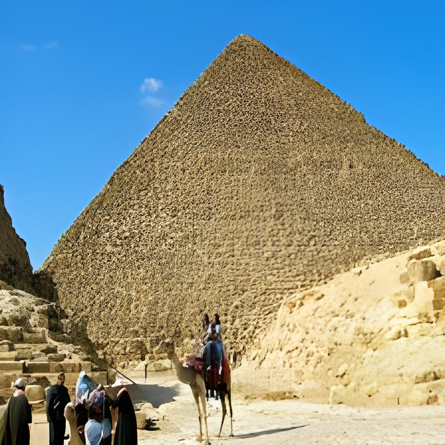
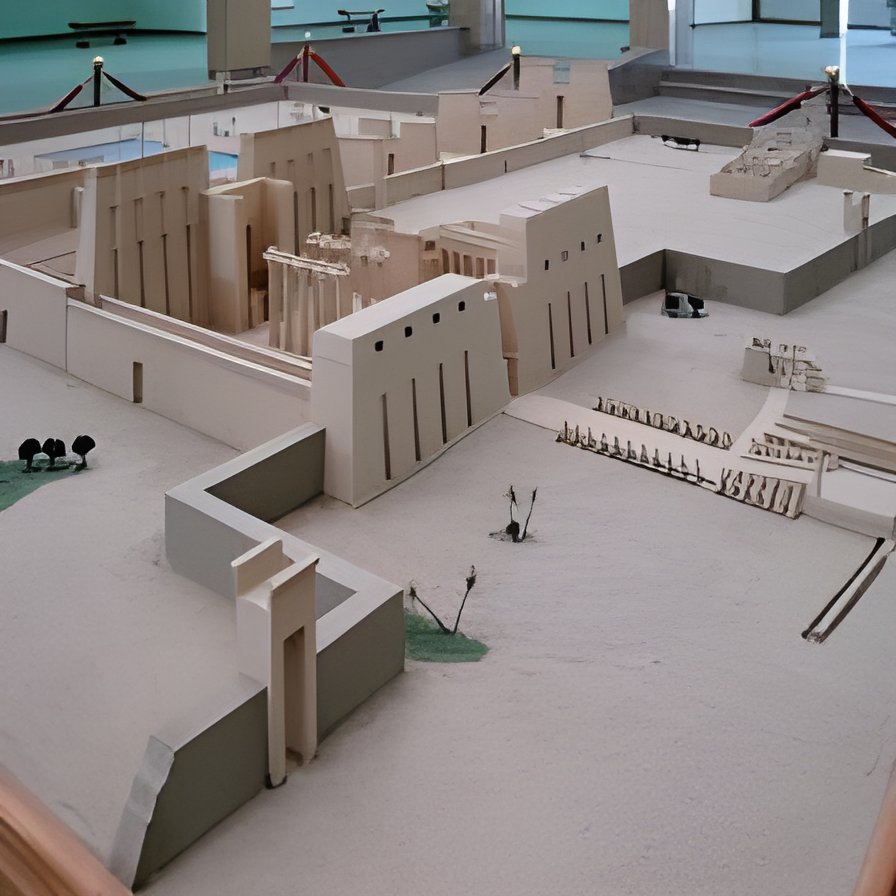
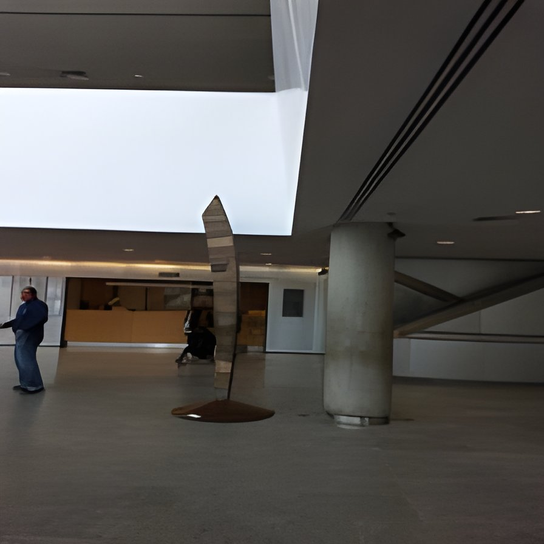

Stories from the Nile
History, travel insights, and discoveries from Egypt's most extraordinary places.

Inside Khufu's Pyramid: What the Builders Left Behind
Walking through the Grand Gallery, the narrow shafts still echo with the silence of 4,500 years. Archaeologists recently discovered a hidden chamber that may finally explain how the pyramid was built.

Karnak at Dawn: The Temple That Never Sleeps
The best time to visit Karnak is before the crowds arrive. As the first light hits the hypostyle columns, you understand why the ancient Egyptians believed this place was the home of the gods.

Alexandria's New Library and the Ghost of the Old One
Standing on the Mediterranean shore, the Bibliotheca Alexandrina rises like a sun disc from the water. Inside, eight million books and the weight of a civilization that once held all knowledge.

Saving Philae: The Greatest Temple Rescue in History
In the 1970s, UNESCO dismantled an entire island temple block by block and moved it to higher ground. It remains one of the most ambitious engineering and cultural preservation operations ever attempted.
Community Voices
Share your experiences, travel tips, and memories from Egypt.